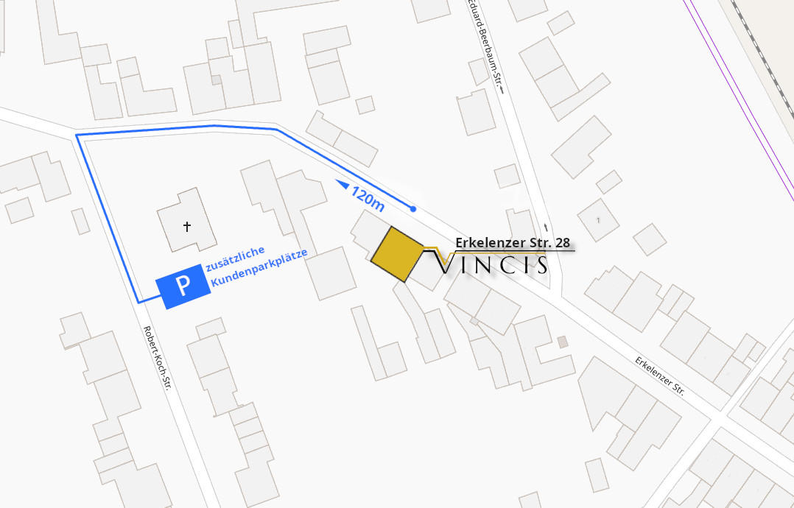

Das Ristorante Vincis ist die ideale Adresse für italienische & mediterrane Küche im stilvollen Ambiente. Mit traditionellen Speisen oder unseren sardischen Spezialitäten, bieten wir Ihnen einen genussvollen Aufenthalt, der zusuammen mit erlesenen Weinen und herzlichem Service abgerundet wird.
Genießen Sie bei warmen Temperaturen Ihre Gerichte auch auf unserer mediterran hergerichteten Terasse.
Wir freuen uns auf Ihre Reservierung,

Liebe Gäste, liebe Freunde, wir haben einen Teil des Lockdown genutzt um nach dieser, auch für uns, sehr aufreibenden Zeit zu Kräften zu kommen und für die Familie da zu sein. Ab Mittwoch, den 25.11.2020 werden wir unter Einhaltung sämtlicher Hygienevorschriften unter folgenden Zeiten unsere Speisen zum Abholen anbieten: Mittwoch bis Sonntag von 17.30 bis 21.00 Uhr Sonntag zusätzlich von 12.00 bis 14.30 Uhr. Die Bestellungen können gerne täglich ab 14.00 Uhr unter 02272 - 407 58 47 durchgegeben werden. Da wir, selbst unter diesen schwierigen Umständen von unseren Prinzipien, die Ware frisch zuzubereiten nicht abweichen werden, bitten wir Sie besondere "exotische" Speisewünsche mindesten 2 Tage vorab zu äußern. Wir geben unser Bestes diese umzusetzen. Wir freuen uns auf Sie!!! Ihr Team vom Ristorante Vincis PS: Die Abholkarte auf Facebook !!!

CENARE | SPEISEN
Auf unserer täglich wechselnden Speisekarte bieten wir Ihnen von der Vorspeise bis zum Dessert eine abgestimmte Variation der italienisch-mediterranen Küche an – ergänzt durch saisonale und sardische Akzente.
Wir sind der Überzeugung, dass Kulinarik nicht erst in der Küche beginnt; aus diesem Grund bereiten wir unsere Speisen stets mit ausgesuchten & frischen Zutaten zu.
Falls Sie Wünsche über unsere Tagekarte hinaus haben, gehen wir selbstverständlich, soweit möglich, darauf ein. Fragen Sie uns bitte einfach am Tisch.
VINO | WEIN
Die Liebe zum Wein ist italienische Tradition. Mit unserer individuellen und durchdachten Auswahl an Weinen aus den verschiedensten Regionen Italiens komplementieren wir unsere Speisen und beraten Sie gerne bei der Auswahl.
Selbstverständlich bietet Ihnen unsere Bar alkoholfreie Getränke, Biere und andere Spirituosen an.
ANFAHRT & PARKEN
Erkelenzer Str. 28 - 50181 Bedburg
Neben den bestehenden Parkmöglichkeiten vor dem Lokal, stehen Ihnen zusätzlich, einen kurzen Fußweg entfernt, weitere Parkplätze zur Verfügung.
